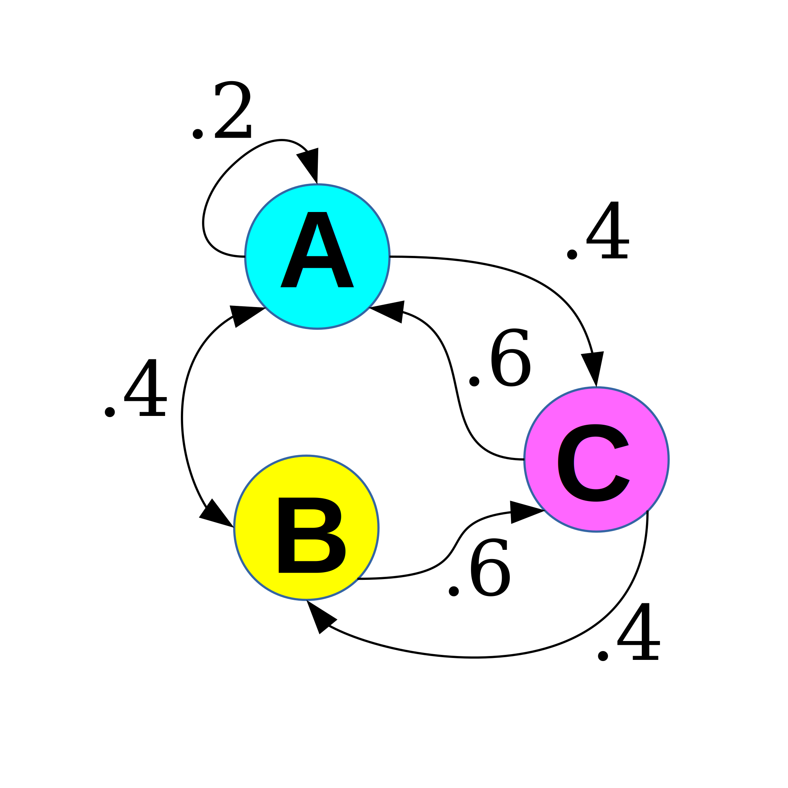

Markov Chains in Python
Representing Markov Chains in Python 3¶
Markov chains are random processes wherein state-changes occur according to some probablility function.
Markov chains can be visualized as graphs, with weights along the edges representing the probability of each state change. Here's an example of a relatively simple three-state markov chain: 
An intuitive way to represent such a system is with a python dictionary, with each state as a key and values that map each node that the key state is connected with to the probablility that it will change to that node. In the example above, the key 'B' would have a value that maps .4 to 'A' and .6 to 'C'.
Numpy arrays (alternative: lists of 2 lists) provide a convenient way to map probabilities to connected nodes:
import numpy as np
state_dict = {'A': np.array([['A', 'B', 'C'],
[.2, .4, .4]]),
'B': np.array([['A', 'C'],
[.4, .6]]),
'C': np.array([['A', 'B'],
[.6, .4]])}
With the state dictionary defined, it's straight-forward to build a markov-chain class based on this structure:
class Markov(object):
def __init__(self, state_dict):
self.state_dict = state_dict
self.state = list(self.state_dict.keys())[0]
def check_state(self):
print('Current State: %s' % (self.state))
def set_state(self, state):
self.state = state
print('State is now: %s' % (self.state))
def next_state(self):
A = self.state_dict[self.state]
self.state = np.random.choice(a=list(A[0]), p=list(A[1]))
print('New State: %s' % (self.state))
np.random.choice makes for an extremely convenient way to sample randomly from the probablility destribution defined in the state dictionary. The argument a is a list of elements and p is the corresponding list of probabilities. The class methods can be seen in action below:
diagram_a = Markov(state_dict)
diagram_a.check_state()
diagram_a.set_state('B')
for x in range(10):
diagram_a.next_state()
Comments
Comments powered by Disqus